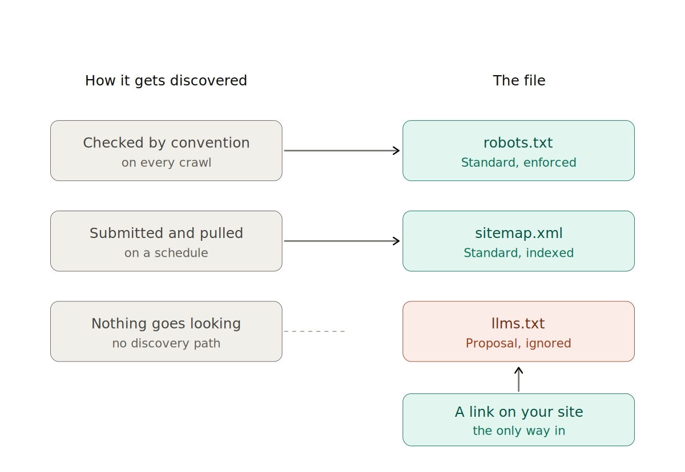
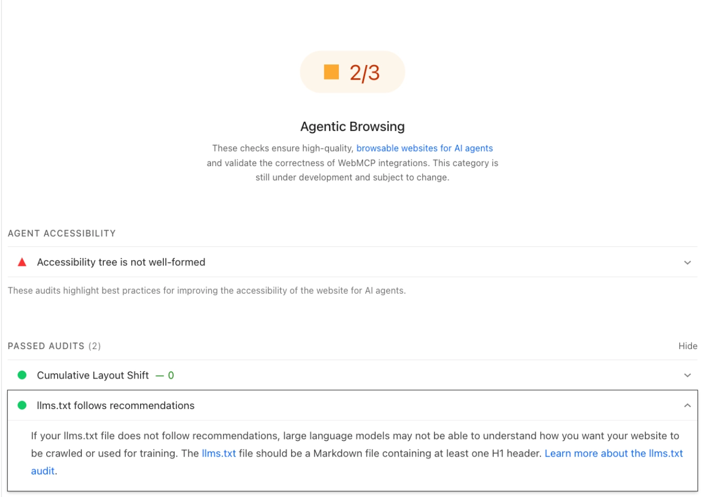
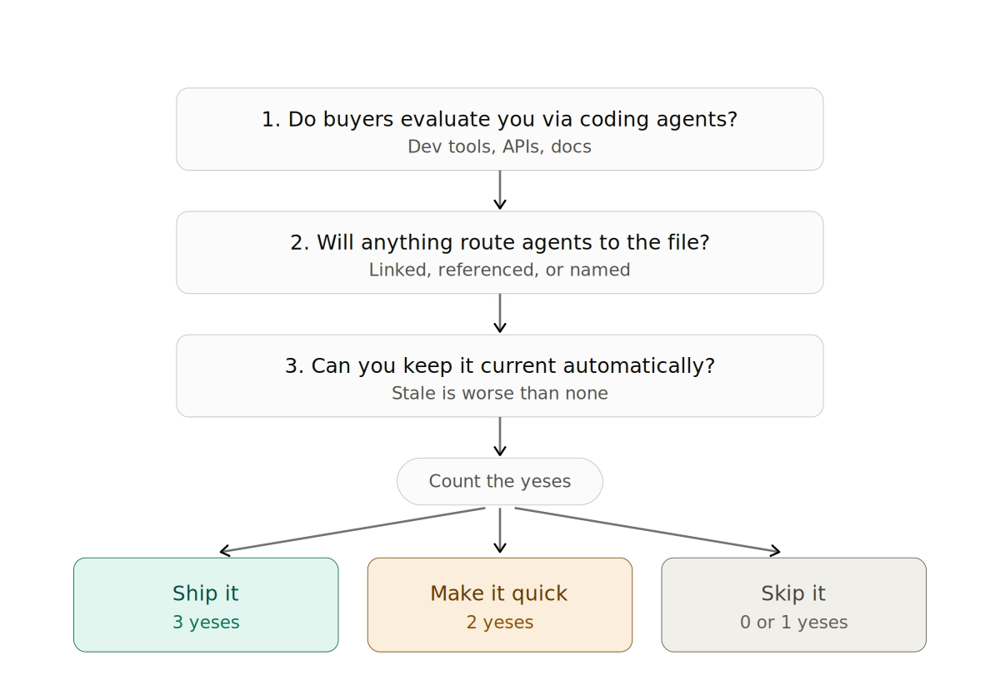

More than one in four websites now publishes an LLMs.txt file. Last month, 97% of those files were fetched by nothing at all. No bot. No human. Nothing.
That's the whole argument in two numbers, and it's worth sitting with before you put the file on a sprint.
LLMs.txt likely does not improve your visibility in AI search. Google Search ignores it as stated policy, and the AI bots that fetch pages to answer live user questions make up roughly 1% of the requests these files receive. What LLMs.txt does reliably is hand coding agents and agentic tools a cheap map of your site, and only when something points them at it. Currently, no AI system goes looking for one. Publish it if your buyers evaluate you through coding agents, or if your CMS generates it for free, but don’t put engineering hours behind it, and don't expect citations from it.
In Marketing to Agents back in May, I put LLMs.txt in Layer 2 of the agent stack, under discoverability. Not visibility. That distinction looked like hair-splitting at the time. A month later the data landed, and the placement turned out to be the entire story. Most of the industry still has this file filed in the wrong layer, which is why so many teams are disappointed by it.
What LLMs.txt actually is
LLMs.txt is a single Markdown file that sits at the root of your domain, at /llms.txt.
Jeremy Howard, co-founder of Answer.AI and fast.ai, proposed it in 2024, and the spec information lives at llmstxt.org. The reasoning was practical and good: web pages are stuffed with navigation, scripts, and boilerplate that burn through a model's context window before it reaches anything useful. A clean Markdown index that says "read these pages, in this order, and here's what each one covers" solves a real problem, especially for large documentation sets where the useful material is buried six clicks deep.
The file itself is simple. A title, a one-line description of what you do, then grouped sections of links, each with a short note on what the reader will find there.
The AI visibility framing came later. The SEO industry attached it, on the theory that AI platforms would start rewarding sites that published one. That theory has now been tested.
Two things LLMs.txt is not
It's not a directive. The filename suggests a sibling of robots.txt, and that's the most common misread. Robots.txt sets rules that crawlers broadly honor. LLMs.txt controls nothing, blocks nothing, and grants nothing. It's a suggestion, and no system is obligated to take it. If you're publishing LLMs.txt hoping to shape what models can and can't use, you've picked the wrong file.
It's not the practice of publishing Markdown copies of your pages. That's a separate tactic with its own tradeoffs, and it gets conflated with LLMs.txt constantly. LLMs.txt is one index file. Serving .md versions of every page is a different project with a different cost.
Who actually reads LLMs.txt
In June 2026, Ahrefs published the first large-scale look at this using real server logs: 137,210 domains, checked for a valid LLMs.txt, with every request to those files classified by user agent.
The results are the clearest data we have.
28% of the domains published an LLMs.txt. That sample skews technical, so treat it as a ceiling rather than a read on the open web. Of the roughly 38,000 domains with a valid file, 97% received zero requests in May 2026. The remaining 3% absorbed all the traffic in the study, about 1,100 domains.
Here's who those requests came from.
Combine the four AI categories and you get 19.5%. That's the generous read, and it's still under a fifth. The single largest requester of LLMs.txt files is SEO audit tools checking whether you have one.
Now look at the split inside the AI bucket, because that's where the useful signal is.
AI agents and the infrastructure serving them: 10.5%. AI retrieval bots, meaning the crawlers that fetch pages to answer a live question inside ChatGPT or Perplexity: 1.1%. Training crawlers fetch LLMs.txt roughly 5x more often than retrieval bots do. GPTBot alone accounts for 4.51%. Claude Code, Anthropic's coding agent, out-fetched every AI retrieval bot, every AI assistant, and every training crawler except GPTBot.
One detail says it better than the table does: Slackbot, the link-preview bot that fires when somebody pastes a URL into a channel, fetched LLMs.txt files more often than PerplexityBot did.
One caveat that matters and that most write-ups skip: a fetch is not a read. A bot requesting the file tells you the bytes moved. It tells you nothing about whether anything acted on them. Every number above is a ceiling on actual consumption, not a measurement of it.
Why nothing finds it: LLMs.txt is a pull file
The most important finding in that study isn't the 97%. It's the 404s.
Ahrefs looked at every request to an /llms.txt path that returned a 404, meaning the file didn't exist. Valid files drew 96% bot traffic. Missing files drew 98% human traffic, and the AI bot share of those 404s was zero.
Nothing probes for it. No AI system checks whether you've published one. The people typing /llms.txt into a browser bar to see what's there are SEOs looking at competitors.
That's the mechanism, and it reframes the whole file. Sitemaps get submitted to Search Console and pulled on a schedule. Robots.txt gets checked by convention on effectively every crawl, because the protocol says to. LLMs.txt has neither. It has no discovery path at all.
LLMs.txt is a pull file, not a push signal. It only ever gets read when something already told an agent it exists.

This means publishing it isn't the job. Routing to it is. An LLMs.txt sitting at your root with nothing linking to it is a note left on a table in a room nobody enters.
What Google actually said, both halves
Google's guidance on optimizing for generative AI features lists LLMs.txt under a section headed "mythbusting." You don't need special machine-readable files or markup to show up in Google's AI surfaces, because Search doesn't use them. That's the half everybody quotes.
The second half is the more interesting one, and I've seen almost nobody pick it up. Google goes on to say it's completely fine to create and maintain these files for other services or systems that do use them, and that doing so will neither help nor hurt how the site performs in Google Search.
Read that carefully. Google didn't say LLMs.txt is worthless. Google said LLMs.txt is not a Google Search input, and then explicitly left room for the systems that aren't Google Search.
Days after that guidance went up, the Chrome team shipped an LLMs.txt check inside Lighthouse's experimental agentic browsing audits, with documentation explaining that agents without the file may burn more time crawling a site to work out its structure. Cue a week of takes about Google contradicting itself.
It isn't a contradiction. Search and agents are two different products with two different needs, and they gave two different answers. John Mueller, pressed on it directly, said LLMs.txt is "not done for search," and described it as a temporary crutch for AI coding tools parsing developer documentation.
Look at where Chrome filed the audit and the argument closes itself. In the Lighthouse documentation, the LLMs.txt check sits under a section heading called Discoverability, next to WebMCP integration and agent accessibility. That's Google's own information architecture putting this file in the discoverability layer of the agentic web, not the visibility layer of search.
And the audit is more measured than the headlines about it. If a site doesn't serve an LLMs.txt at all, the check doesn't fail. It returns Not Applicable, on the stated grounds that providing the file is optional. The team that built the audit declines to treat a missing file as a problem.
That's Google's guidance, Google's spokesperson, and Google's own docs structure, all pointing at the same place: the agent lane.
Finally, the check has since moved out of the documentation and into a tool millions of people already use. PageSpeed Insights, Google's public-facing performance tool, now runs an Agentic Browsing section that reports whether your LLMs.txt follows the recommended format, alongside checks for agent accessibility and WebMCP. It's the same Lighthouse audit reaching a far wider audience, and Google marks the whole category as still under development and subject to change. Worth knowing it's there. Not worth reading as a promise.

The three-question test
Here's how I'd decide, and it takes about ninety seconds.
- Do your buyers evaluate you through coding agents or agentic tools? If you sell developer tooling, an API, an SDK, or anything with real documentation, the answer is increasingly yes. Claude Code and Cursor read docs on a user's behalf, and the Ahrefs data shows coding agents are the closest thing this file has to a genuine audience. If you sell to marketers through a website, the answer is probably no.
- Will something actually route agents to it? Can you link it from your HTML, reference it in your docs, name it in your MCP server description, or put it anywhere an agent receives instructions about your site? If the file will sit unlinked at your root, you already know the outcome.
- Can you keep it current without a human remembering to? A stale LLMs.txt pointing at dead or outdated pages is worse than none. It misleads every agent that reads it, and it signals a site nobody maintains.
Three yeses, ship it. Two yeses, make it quick. Fewer than two, skip it and spend the time elsewhere.

How to build an LLMs.txt that gets read
Keep it short. The point of the file is to save the reader tokens, so a bloated LLMs.txt defeats its own purpose. Title, one-line description, grouped links, one clean sentence per link explaining what's on the page.
Link only to pages you control and actually want represented. Every URL in this file is a page you're volunteering as the definitive description of your business.
A working example
That's the whole format. No frontmatter, no schema, no instructions to the model. Headings, a blockquote summary, and links with descriptions.
If you'd rather not hand-write it, Goodie has a free LLMs.txt generator that builds one from your site and checks whether you already have a file. Either way it's a starting point, and you should read every line before it goes live, for the reason in the security section below.
The step almost everyone skips
Publish, then route. Link the file from your HTML head or footer. Reference it in your documentation index. Name it in your MCP server description if you run one. Mention it wherever an agent picks up instructions about your site.
Agents fetch LLMs.txt when they're directed to it. They do not go hunting. Skipping this step is the difference between the 3% and the 97%.
LLMs.txt vs robots.txt vs sitemap.xml
These get lumped together constantly and they solve different problems.
The middle row is the one to internalize. Robots.txt and sitemap.xml are standards with enforcement and a discovery mechanism behind them. LLMs.txt is a proposal with neither.
What about llms-full.txt?
llms-full.txt is the companion format, containing your full page content in a single Markdown document rather than an index of links.
Everything above applies to it, more so. It's larger, it goes stale faster, and it has the same absent discovery path. If you're publishing one, it's for a documentation set that a coding agent is likely to ingest whole. For a marketing site, it's a maintenance burden with no evidence behind it.
The security problem nobody's discussing
This is the part of the LLMs.txt conversation that's missing, and it's the one that would actually worry me as an operator.
In the Ahrefs dataset, the single largest research crawler identified itself as prompt-injection-survey/1.0. Somebody is systematically studying LLMs.txt as an injection surface, and the reason is obvious once you say it out loud: LLMs.txt is a file that agents are explicitly designed to trust and ingest as instruction-adjacent context.
The industry built the supply chain before the readers arrived. CMS platforms now auto-generate these files. Tools audit and score them. Researchers are probing them. All of it running ahead of any confirmation that a major AI platform reads them at all.
If you publish one, treat it like code, not like a marketing asset:
- Put it in version control.
- Restrict who can edit it, and alert on unauthorized changes.
- Keep the contents to plain links and descriptions. Nothing instruction-shaped, nothing that reads like a command to a model.
- Link only to resources you control.
- Read anything a plugin or platform auto-generated on your behalf before it ships.
The real cost of LLMs.txt was never the hour it takes to write. It's the surface you opened and then stopped thinking about.
What to do with that hour instead
If your goal is getting cited in AI answers, the levers that move are the unglamorous ones.
Start with crawler access, because it's the gate everything else sits behind. Confirm GPTBot, ClaudeBot, OAI-SearchBot, PerplexityBot, and Googlebot can reach your content, and that your key pages return real content to a non-JavaScript fetch. A page that only renders client-side is invisible to most of what retrieves.
Then work on the content itself. Self-contained sections, claims stated plainly, specific numbers, named integrations, real pricing. I've written about how to structure content for AI agents and the honest finding there holds here too: structure is the floor you have to clear, not the lever that wins. Clearing the floor still matters. Confusing it for the lever is what leaves teams optimizing files instead of arguments.
Instrument it. Read your own logs, filter for the AI user agents, and see what's actually fetching what. If you want the tooling layer instead, I've reviewed the GEO platforms and the broader set of AEO tools, and written up how to measure AI search visibility end to end.
LLMs.txt is a cheap bet on the agentic web, and the agentic web is coming. Just be clear-eyed about which bet you're making. You aren't buying citations, you're leaving a map at the door for a visitor who might show up, and who will only find it if you tell them it's there.
Publish it in ten minutes if you want one. Link to it so something can find it. Version-control it so nobody can quietly rewrite it.
Then go spend the afternoon on the work that actually decides whether you get cited.